31th SEANET Convention
SEANET 2003 PHORT ALBUM
各国からの参加者
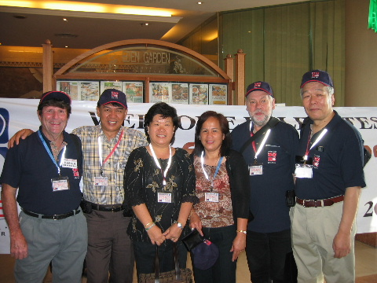
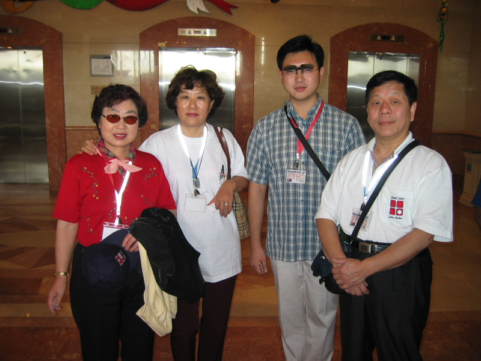
(左)VK6ADI. 9M6MU. 9W6DU. VK6U0/XYL. VK6UO. JA1RJU /(右)HL2DBF. HL2KDW. BG1DO. BA1HAM

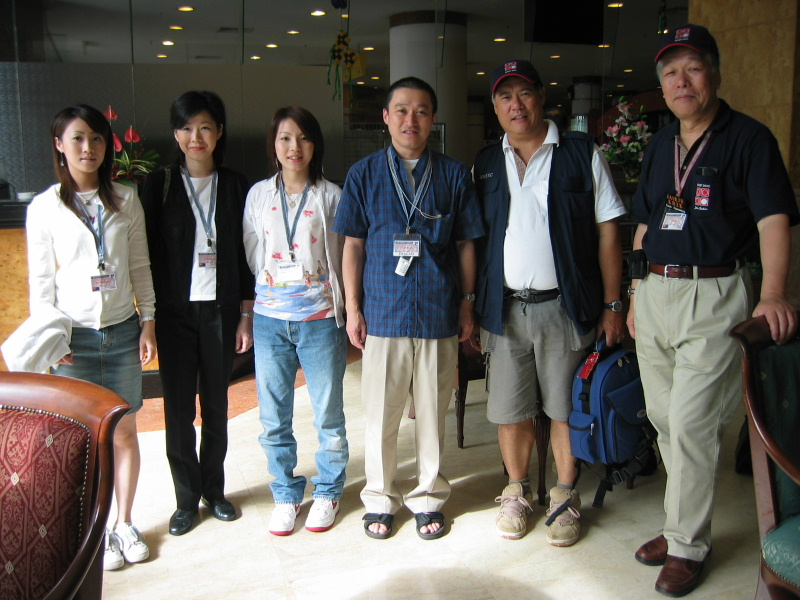
(左の写真)左からWD5FQX. XE1CI. HS1YL. JR3MVF
家族4人で参加されたJH3GAH・後藤さん(左から4人). VK6XC. JA1RJU
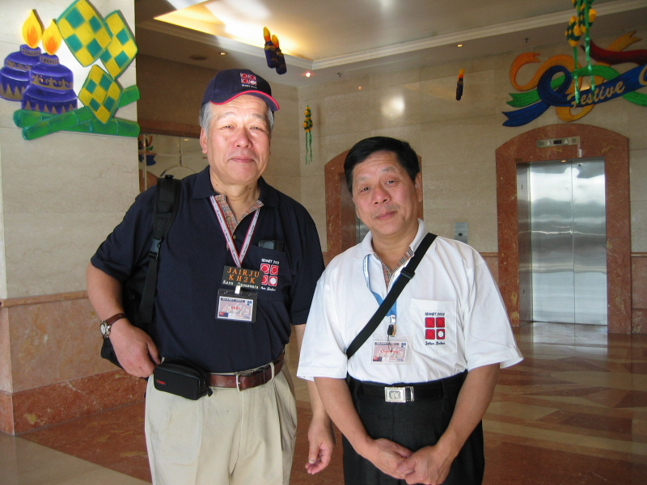
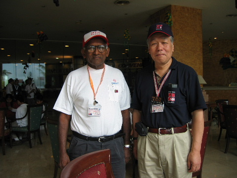
(左)BA1HAM・Chen PingとJA1RJU /(右)6mでもアクティブな9V1UV・Selva
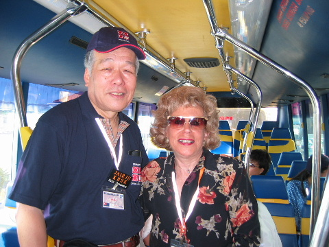
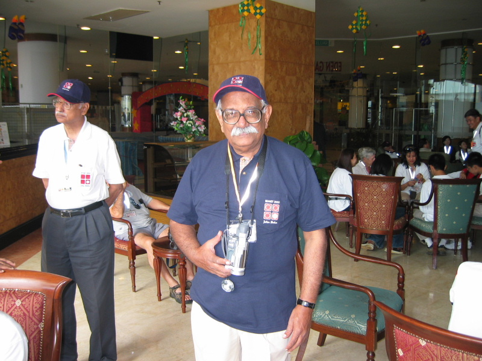
メキシコのアクティブなYL局・XE1CIと/6mにもQRVしているVU2RCR・Chandru
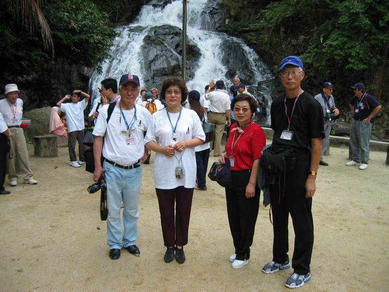
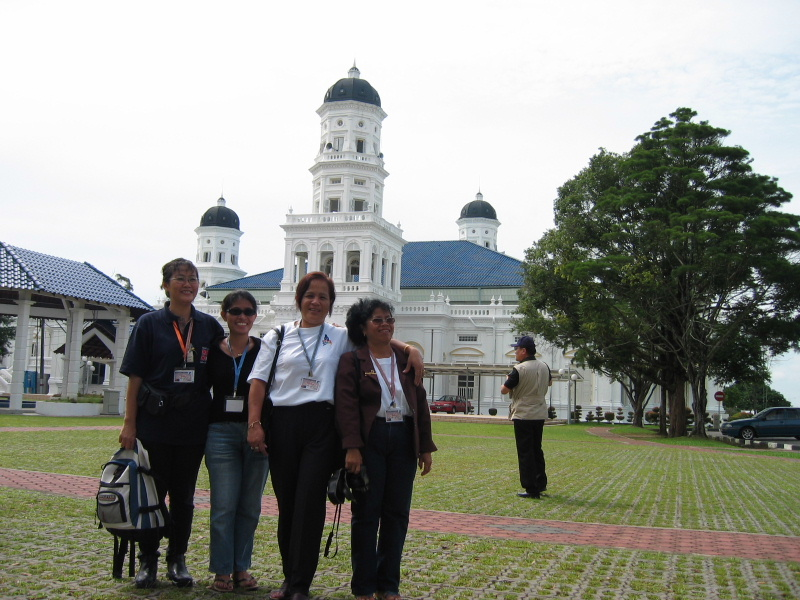
Kota TinggiのWaterfalls(滝)で/ "Royal Abu Bakar Museum"で
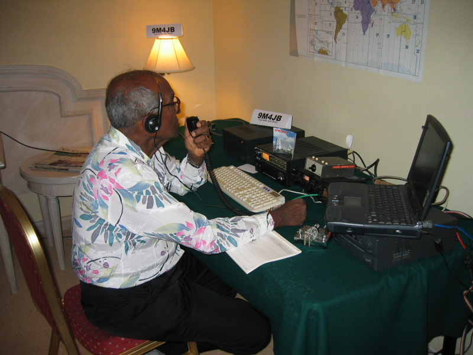
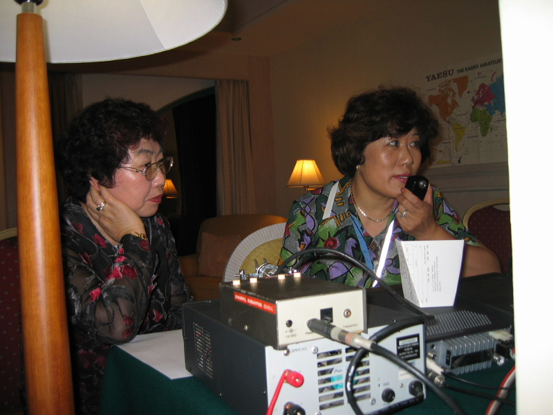
(左)9M0SEAを運用する9V1VS/ HL2KDW(右)とHL2DBF
 |
SEANET 2003 TOP |